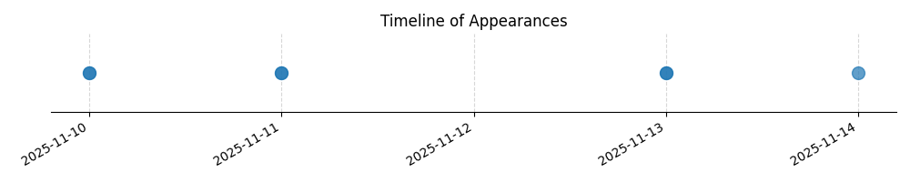

Kategorie: Letecké předpisy
Řízený let je definován jako let, který je předmětem letového povolení. Letový plán (A) je oznámení úmyslu letět, ale sám o sobě nečiní let řízeným. Let na řízeném letišti (C) se týká místních operací, ale definice řízeného letu je širší a zahrnuje jakýkoli let, který je aktivně řízen řízením letového provozu na základě vydaného povolení.

| Datum výskytu |
|---|
| 2025-11-14 |
| 2025-11-13 |
| 2025-11-11 |
| 2025-11-10 |